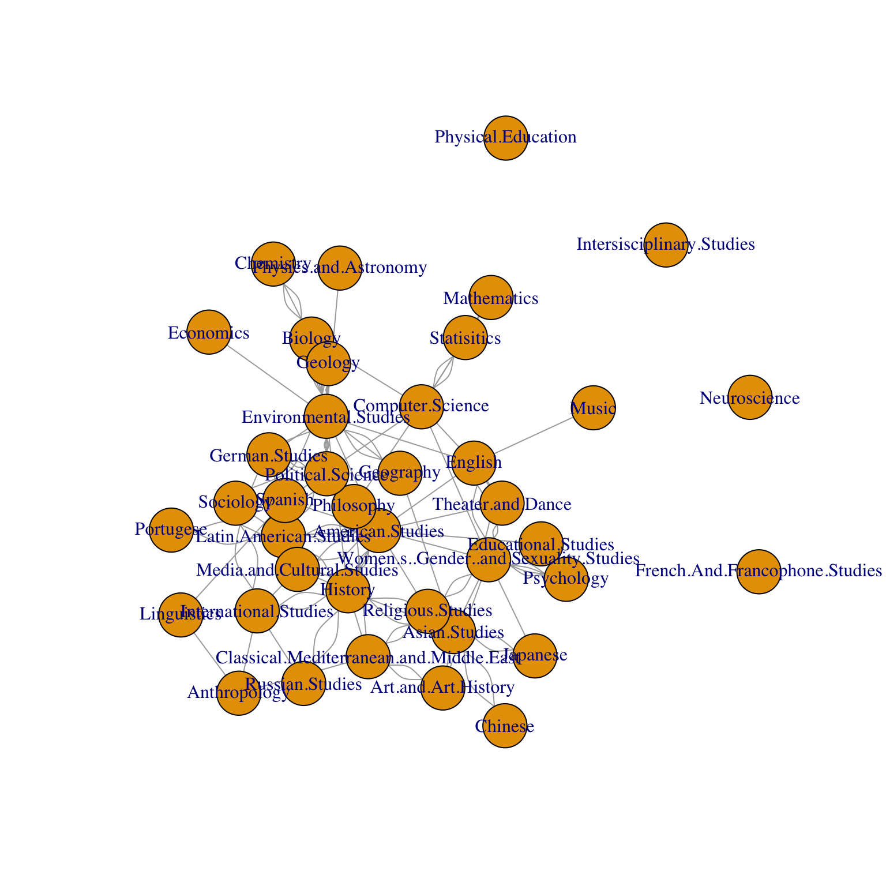
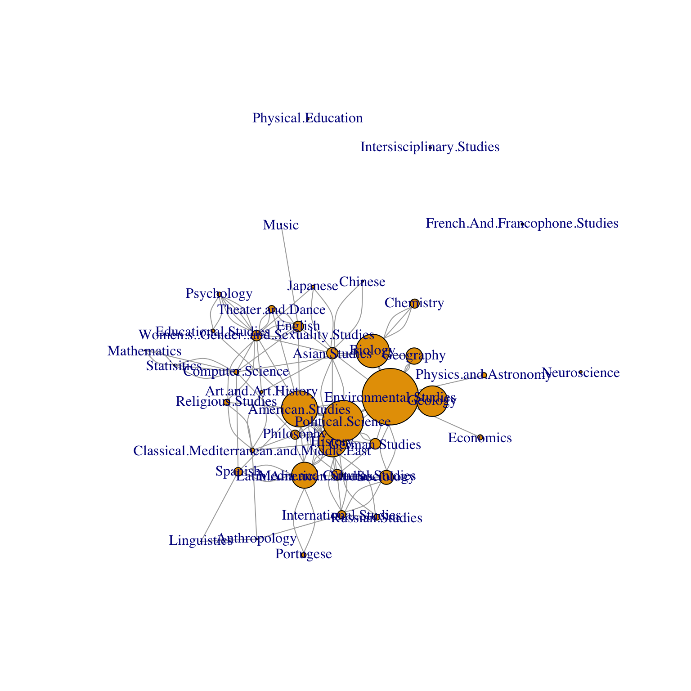

Found the degree and eigenvalue centrality to measure the connectedness of the departments at macalester.
department<-read.csv("/Users/alexmccreight/Desktop/Misc./cs3.csv") # read in the data
DepartmentName = c("American Studies", "Anthropology", "Art and Art History", "Asian Studies", "Biology", "Chemistry", "Chinese", "Classical Mediterranean and Middle East", "Computer Science", "Economics", "Educational Studies", "English", "Environmental Studies", "French and Francophone Studies", "Geography", "Geology", "German Studies", "History", "International Studies", "Interdisciplinary Studies","Japanese", "Latin American Studies", "Linguistics", "Mathematics", "Media and Culutral Studies", "Music", "Neuroscience", "Physical Education", "Philosophy", "Physics and Astronomy", "Political Science", "Portugese", "Psychology", "Religious Studies", "Russian Studies", "Sociology", "Spanish", "Statistics", "Theater and Dance", "Women's, Gender, and Sexuality Studies" )

Explain what your network is: what are the vertices when are two connected by an edge
Our network measures the amount of classes cross-listed between different departments at Macalester. The verticies are the department names, and the edges are if the departments share a class that is cross-listed.
Determine the degree centrality of each vertex.v=rep(1,nrow(A)) # all 1s vector
d = A %*% v # degrees
u=d/sum(d) # proportion of degrees
cbind(d,u) # show d and u together side-by-side in a matrix
[,1] [,2]
American Studies 18 0.080000000
Anthropology 3 0.013333333
Art and Art History 4 0.017777778
Asian Studies 10 0.044444444
Biology 10 0.044444444
Chemistry 3 0.013333333
Chinese 2 0.008888889
Classical Mediterranean and Middle East 6 0.026666667
Computer Science 6 0.026666667
Economics 1 0.004444444
Educational Studies 2 0.008888889
English 6 0.026666667
Environmental Studies 24 0.106666667
French And Francophone Studies 0 0.000000000
Geography 4 0.017777778
Geology 6 0.026666667
German Studies 4 0.017777778
History 15 0.066666667
International Studies 6 0.026666667
Intersisciplinary Studies 0 0.000000000
Japanese 3 0.013333333
Latin American Studies 12 0.053333333
Linguistics 2 0.008888889
Mathematics 3 0.013333333
Media and Cultural Studies 5 0.022222222
Music 1 0.004444444
Neuroscience 0 0.000000000
Physical Education 0 0.000000000
Philosophy 5 0.022222222
Physics and Astronomy 1 0.004444444
Political Science 13 0.057777778
Portugese 2 0.008888889
Psychology 6 0.026666667
Religious Studies 5 0.022222222
Russian Studies 3 0.013333333
Sociology 5 0.022222222
Spanish 5 0.022222222
Statisitics 5 0.022222222
Theater and Dance 5 0.022222222
Women's, Gender, and Sexuality Studies 14 0.062222222Determine the eigenvector centrality of each vertex in two ways:
-Find the dominant eigenvector by looping and using Gould’s index.
[,1]
American Studies 0.082649618
Anthropology 0.002808020
Art and Art History 0.006432586
Asian Studies 0.026141263
Biology 0.076833790
Chemistry 0.020810529
Chinese 0.004720263
Classical Mediterranean and Middle East 0.010530491
Computer Science 0.011799827
Economics 0.011688650
Educational Studies 0.008382594
English 0.024040463
Environmental Studies 0.129465704
French And Francophone Studies 0.000000000
Geography 0.037426081
Geology 0.070131899
German Studies 0.024286781
History 0.066139198
International Studies 0.018560317
Intersisciplinary Studies 0.000000000
Japanese 0.006891253
Latin American Studies 0.059597324
Linguistics 0.002011360
Mathematics 0.001697782
Media and Cultural Studies 0.024763528
Music 0.002170463
Neuroscience 0.000000000
Physical Education 0.000000000
Philosophy 0.021119962
Physics and Astronomy 0.011688650
Political Science 0.093655804
Portugese 0.010761340
Psychology 0.010197584
Religious Studies 0.013705363
Russian Studies 0.013618285
Sociology 0.032109360
Spanish 0.019470184
Statisitics 0.003502562
Theater and Dance 0.016144825
Women's, Gender, and Sexuality Studies 0.024046298 v1
American Studies 0.082649618+0i 0.082649618+0i
Anthropology 0.002808020+0i 0.002808020+0i
Art and Art History 0.006432586+0i 0.006432586+0i
Asian Studies 0.026141263+0i 0.026141263+0i
Biology 0.076833790+0i 0.076833790+0i
Chemistry 0.020810529+0i 0.020810529+0i
Chinese 0.004720263+0i 0.004720263+0i
Classical Mediterranean and Middle East 0.010530491+0i 0.010530491+0i
Computer Science 0.011799827+0i 0.011799827+0i
Economics 0.011688650+0i 0.011688650+0i
Educational Studies 0.008382594+0i 0.008382594+0i
English 0.024040463+0i 0.024040463+0i
Environmental Studies 0.129465704+0i 0.129465704+0i
French And Francophone Studies 0.000000000+0i 0.000000000+0i
Geography 0.037426081+0i 0.037426081+0i
Geology 0.070131899+0i 0.070131899+0i
German Studies 0.024286781+0i 0.024286781+0i
History 0.066139198+0i 0.066139198+0i
International Studies 0.018560317+0i 0.018560317+0i
Intersisciplinary Studies 0.000000000+0i 0.000000000+0i
Japanese 0.006891253+0i 0.006891253+0i
Latin American Studies 0.059597324+0i 0.059597324+0i
Linguistics 0.002011360+0i 0.002011360+0i
Mathematics 0.001697782+0i 0.001697782+0i
Media and Cultural Studies 0.024763528+0i 0.024763528+0i
Music 0.002170463+0i 0.002170463+0i
Neuroscience 0.000000000+0i 0.000000000+0i
Physical Education 0.000000000+0i 0.000000000+0i
Philosophy 0.021119962+0i 0.021119962+0i
Physics and Astronomy 0.011688650+0i 0.011688650+0i
Political Science 0.093655804+0i 0.093655804+0i
Portugese 0.010761340+0i 0.010761340+0i
Psychology 0.010197584+0i 0.010197584+0i
Religious Studies 0.013705363+0i 0.013705363+0i
Russian Studies 0.013618285+0i 0.013618285+0i
Sociology 0.032109360+0i 0.032109360+0i
Spanish 0.019470184+0i 0.019470184+0i
Statisitics 0.003502562+0i 0.003502562+0i
Theater and Dance 0.016144825+0i 0.016144825+0i
Women's, Gender, and Sexuality Studies 0.024046298+0i 0.024046298+0i-Using the dominant eigenvector with the built-in eigen function.
eigen(B)
eigen() decomposition
$values
[1] 12.0761898 -9.0822074 9.0761005 6.4760123 -5.7095441 5.2652366
[7] 4.7731800 -4.2527888 3.7955328 3.5935375 3.3262670 -3.2003402
[13] 2.9780591 2.7250911 -2.6756693 2.3192413 -2.2904420 1.9854495
[19] -1.5917559 1.5010394 1.3390334 -1.2299909 1.0742927 -1.0125394
[25] 1.0000000 1.0000000 1.0000000 1.0000000 1.0000000 1.0000000
[31] 1.0000000 1.0000000 1.0000000 0.8785235 -0.8197609 0.5833805
[37] -0.5200265 -0.3406748 -0.2242584 0.1838315
$vectors
[,1] [,2] [,3] [,4]
[1,] 0.338038051 0.017318816 -0.414284089 0.112227509
[2,] 0.011484841 -0.004866108 -0.029339889 0.007804564
[3,] 0.026309363 -0.008455336 -0.069835679 -0.163228345
[4,] 0.106918117 0.062130335 -0.190605691 -0.163510376
[5,] 0.314251234 -0.437096061 0.319869708 -0.063203937
[6,] 0.085115344 0.130059631 0.118820849 -0.034625892
[7,] 0.019305938 -0.012324748 -0.047202407 -0.059718776
[8,] 0.043069849 0.009321333 -0.087248089 -0.065714083
[9,] 0.048261450 0.048218634 0.035385023 -0.044508303
[10,] 0.047806735 -0.065602294 0.045225051 -0.006017748
[11,] 0.034284923 -0.001572591 -0.065504107 -0.063639072
[12,] 0.098325819 -0.074486366 -0.040638998 -0.154698052
[13,] 0.529516470 0.661415939 0.365242058 -0.032953259
[14,] 0.000000000 0.000000000 0.000000000 0.000000000
[15,] 0.153073174 -0.202969257 0.112073949 -0.047912631
[16,] 0.286840410 -0.393613765 0.271350306 -0.036106485
[17,] 0.099333262 -0.043671609 0.007627147 0.054287059
[18,] 0.270510209 -0.123091668 -0.381541767 0.124089876
[19,] 0.075911945 0.036615839 -0.130005663 0.086548349
[20,] 0.000000000 0.000000000 0.000000000 0.000000000
[21,] 0.028185317 -0.012768644 -0.071830393 -0.169087026
[22,] 0.243753856 0.099914382 -0.324615233 0.262228461
[23,] 0.008226489 0.003123939 -0.019698138 0.021903624
[24,] 0.006943950 -0.002015736 0.008135503 -0.019655348
[25,] 0.101283161 0.009473105 -0.164991564 0.089368007
[26,] 0.008877224 0.007387903 -0.005032007 -0.028250129
[27,] 0.000000000 0.000000000 0.000000000 0.000000000
[28,] 0.000000000 0.000000000 0.000000000 0.000000000
[29,] 0.086380929 0.055343455 -0.031911323 0.056953943
[30,] 0.047806735 -0.065602294 0.045225051 -0.006017748
[31,] 0.383053499 -0.285926275 -0.106741566 0.183907911
[32,] 0.044014027 -0.019819942 -0.080389102 0.095773511
[33,] 0.041708258 -0.001463630 -0.114733662 -0.460715851
[34,] 0.056055117 -0.004454618 -0.122160002 -0.222242820
[35,] 0.055698970 0.020785874 -0.110584210 0.061126251
[36,] 0.131327714 -0.148378016 0.018060394 0.067461251
[37,] 0.079633314 -0.026630096 -0.129744258 0.112139951
[38,] 0.014325527 -0.013947782 0.015159058 -0.031562311
[39,] 0.066032550 0.012170253 -0.110617528 -0.254742371
[40,] 0.098349683 0.004475452 -0.198898094 -0.598901880
[,5] [,6] [,7] [,8]
[1,] 0.5125538819 0.148893301 -0.092192718 0.0144693192
[2,] -0.0463632795 -0.070513894 0.069346766 -0.0381061892
[3,] -0.0658148558 -0.146611848 0.030175435 -0.1845260974
[4,] 0.3407464446 -0.463595550 0.183880753 -0.0109543724
[5,] 0.1267173241 -0.008462940 0.104586861 0.0184364508
[6,] -0.0566583908 -0.005952499 0.083155478 -0.0105295215
[7,] -0.1015706697 -0.217383274 0.097467258 0.0041708787
[8,] 0.1134789394 -0.107570924 0.056166758 0.1564433102
[9,] -0.0269670880 0.213411150 0.421654425 0.0258868579
[10,] 0.0162274616 -0.009051866 -0.012213209 0.0028918313
[11,] -0.0916702564 0.052412618 -0.088036067 0.1013361389
[12,] -0.0338196310 0.122701912 -0.006739571 -0.0930575864
[13,] -0.1088788693 -0.038608349 -0.046082635 -0.0151901793
[14,] 0.0000000000 0.000000000 0.000000000 0.0000000000
[15,] -0.0021029501 -0.135847234 0.012094002 0.0107609334
[16,] 0.0973647695 -0.054311193 -0.073279254 0.0173509881
[17,] 0.0652868782 0.103928835 -0.064869133 0.0116763108
[18,] -0.5745097937 -0.301265616 0.180231053 -0.0662100869
[19,] 0.1764351302 -0.225616503 0.171191589 0.0316741449
[20,] 0.0000000000 0.000000000 0.000000000 0.0000000000
[21,] -0.0827740655 -0.204862708 0.049137488 -0.1228748478
[22,] 0.0674314357 0.247990495 -0.068550594 0.0399064793
[23,] 0.0211623997 0.032428985 0.034299480 0.0120463082
[24,] 0.0004664866 0.154360089 0.402554466 0.0008199018
[25,] -0.1031843545 -0.029345777 0.027077445 -0.0011572914
[26,] 0.0050405259 0.028767903 -0.001786178 0.0177158439
[27,] 0.0000000000 0.000000000 0.000000000 0.0000000000
[28,] 0.0000000000 0.000000000 0.000000000 0.0000000000
[29,] 0.0637355111 0.196678838 -0.006679750 -0.0319833343
[30,] 0.0162274616 -0.009051866 -0.012213209 0.0028918313
[31,] -0.2897174764 0.314556361 -0.219077973 -0.0130023895
[32,] -0.0201001542 0.116284519 -0.036335714 -0.0151943971
[33,] 0.1025117476 0.074658916 -0.239983203 -0.5467666536
[34,] -0.0726246765 0.009508923 -0.091321656 -0.3164118607
[35,] 0.1449553711 -0.194162203 0.140903350 0.0191795317
[36,] -0.0301874396 -0.065754666 0.048147005 -0.0138734706
[37,] -0.0956267749 0.208831187 0.060071346 -0.0251705235
[38,] 0.0119185878 0.222485576 0.548628009 -0.0150968144
[39,] -0.0287174995 0.117485505 -0.124665589 -0.2214143626
[40,] -0.1261166449 0.053403177 -0.182356920 0.6673443675
[,9] [,10] [,11] [,12]
[1,] -0.059593648 0.004872839 -0.016709533 -0.411212537
[2,] 0.233962060 -0.308289297 0.018290080 -0.056973922
[3,] 0.344065568 -0.089344008 -0.192177235 -0.124294341
[4,] -0.124819685 0.355593931 -0.090145651 0.383935195
[5,] -0.057815768 -0.124066602 -0.331596653 0.060532759
[6,] -0.062044452 -0.143510475 -0.427633603 -0.043234182
[7,] -0.089299388 0.274215372 -0.077502410 -0.182811474
[8,] 0.568872775 -0.285896751 -0.195309529 0.129371330
[9,] -0.043703662 0.009440968 0.012154692 -0.018887811
[10,] 0.004066675 0.006382471 0.035777187 0.004192828
[11,] -0.063785526 -0.010458614 0.028129916 0.079578503
[12,] -0.116622110 0.003662333 0.129436434 0.118466509
[13,] 0.011368524 0.016553178 0.083227292 -0.017611304
[14,] 0.000000000 0.000000000 0.000000000 0.000000000
[15,] -0.032449669 0.156255099 0.068580357 -0.078827253
[16,] 0.024400050 0.038294826 0.214663124 0.025156968
[17,] 0.213168668 0.027673665 0.141486135 -0.085387991
[18,] -0.071911038 -0.071347549 0.053737734 -0.205038411
[19,] 0.023237891 -0.427802503 0.341129005 0.064370950
[20,] 0.000000000 0.000000000 0.000000000 0.000000000
[21,] -0.107571135 0.268232244 -0.063011752 -0.154099673
[22,] -0.064321951 0.146785344 -0.246789250 0.474582608
[23,] 0.061937956 -0.085860610 -0.103271865 0.045567577
[24,] -0.100759268 0.029757266 0.071698116 -0.002491533
[25,] 0.016207367 -0.178031242 0.216197796 0.249617999
[26,] -0.041717310 0.001412099 0.055641262 -0.028204027
[27,] 0.000000000 0.000000000 0.000000000 0.000000000
[28,] 0.000000000 0.000000000 0.000000000 0.000000000
[29,] 0.390994304 0.047396889 0.004102887 -0.126525600
[30,] 0.004066675 0.006382471 0.035777187 0.004192828
[31,] 0.177349818 0.185853865 0.025606557 0.253177521
[32,] -0.046017668 0.113193152 -0.212176199 -0.225973412
[33,] -0.118720885 -0.031997647 0.082147230 0.076955746
[34,] 0.349126059 -0.230555984 -0.146118353 0.093723012
[35,] -0.043134598 -0.219968901 0.192843068 0.082304254
[36,] 0.001749533 -0.260537315 0.258750750 -0.135251400
[37,] -0.060812470 0.085606582 -0.258528018 -0.134425407
[38,] -0.118986091 0.033867809 0.077317137 0.014676549
[39,] -0.141295571 -0.007263219 0.133080859 0.098915363
[40,] -0.051079270 -0.015517467 0.033709141 -0.120599331
[,13] [,14] [,15] [,16]
[1,] 0.0657600213 -0.119016835 -0.266876909 -0.165166353
[2,] -0.1875662674 -0.035128542 -0.070975301 0.284013783
[3,] -0.1667860877 -0.154780040 -0.221668380 -0.173432414
[4,] 0.0736850629 0.011828406 0.380708937 0.099420448
[5,] 0.2323340986 0.033759638 -0.080060215 0.024777788
[6,] 0.3523667647 0.058709312 0.065343376 0.056345543
[7,] 0.0745023865 0.013713370 -0.207150808 0.150723679
[8,] -0.2014461113 -0.189874410 0.266987841 -0.193548885
[9,] 0.0017499864 -0.005872384 0.218768200 0.045345019
[10,] -0.0504939149 -0.010822336 0.005464921 -0.022954326
[11,] 0.0665309161 0.203217611 0.050504252 -0.067866164
[12,] -0.0011794347 -0.383738077 0.014385222 0.133183730
[13,] -0.0998799493 -0.018669517 -0.020087242 -0.030282294
[14,] 0.0000000000 0.000000000 0.000000000 0.000000000
[15,] -0.1142305514 -0.025610325 -0.087180642 0.006498861
[16,] -0.3029634892 -0.064934019 0.032789525 -0.137725957
[17,] 0.3122388044 0.263444660 -0.076184329 0.322395788
[18,] 0.0433931661 -0.023986852 -0.072121034 -0.150980103
[19,] 0.0581611084 0.187961736 -0.013953586 0.244621904
[20,] 0.0000000000 0.000000000 0.000000000 0.000000000
[21,] 0.0741456814 0.072209259 -0.179970738 0.195353971
[22,] -0.1799061984 0.034763341 -0.057298363 -0.007630782
[23,] -0.2277321646 -0.058687263 0.007847484 0.323609684
[24,] -0.1599583164 0.044298844 0.053465877 -0.146880321
[25,] 0.2756809002 0.109783112 0.189356741 0.064965283
[26,] -0.0005962586 -0.222445105 -0.003913633 0.100954794
[27,] 0.0000000000 0.000000000 0.000000000 0.000000000
[28,] 0.0000000000 0.000000000 0.000000000 0.000000000
[29,] 0.2504222236 0.213257270 -0.376619363 0.287855423
[30,] -0.0504939149 -0.010822336 0.005464921 -0.022954326
[31,] 0.1914036430 0.150095180 0.487378267 0.102779415
[32,] -0.1819017396 0.040303193 0.031177104 -0.011568440
[33,] 0.0658420648 0.469585734 0.081239980 0.075634509
[34,] -0.1711492664 -0.172132457 -0.018306562 -0.329361950
[35,] 0.0732776076 0.081148195 0.043038598 -0.043463091
[36,] -0.1331324611 0.216422062 0.034110799 0.319159542
[37,] -0.2629014199 -0.066112334 0.042130544 0.142905466
[38,] -0.1590784973 0.041145964 -0.207645543 -0.119557800
[39,] 0.0313387924 -0.396890052 0.119139218 0.165972183
[40,] -0.0007055837 0.100910740 -0.099904952 0.058878123
[,17] [,18] [,19] [,20]
[1,] -0.0468650404 0.225872436 -0.088040283 -0.147260852
[2,] -0.0981328167 0.149448904 -0.302485534 -0.107930529
[3,] -0.1118007516 -0.008565450 -0.240272924 -0.036589588
[4,] -0.0415456980 0.004044248 -0.167570758 -0.018755453
[5,] -0.1706576401 -0.003342340 0.006597161 -0.007673675
[6,] 0.1555939651 -0.010175073 -0.007636322 -0.045946538
[7,] 0.0252523508 0.008207925 0.129310601 -0.074866187
[8,] 0.2233057717 0.044185171 0.456809429 0.015042436
[9,] 0.4864756117 -0.051869452 -0.168118080 0.111239248
[10,] 0.0198412268 0.013378153 -0.011184748 0.007569450
[11,] 0.0006161633 0.175758227 -0.056198266 0.110026815
[12,] -0.1572200814 -0.053840555 0.154337844 0.086430987
[13,] -0.0652864062 0.013183494 0.028988136 0.003792592
[14,] 0.0000000000 0.000000000 0.000000000 0.000000000
[15,] 0.0721498557 0.044238421 0.031101057 -0.014724744
[16,] 0.1190473605 0.080268917 -0.067108486 0.045416698
[17,] 0.0736919562 -0.190979126 0.051491184 0.067456957
[18,] 0.0299770347 0.080341763 0.051462843 0.163148981
[19,] 0.0147393920 -0.220695505 0.228899588 -0.109207761
[20,] 0.0000000000 0.000000000 0.000000000 0.000000000
[21,] 0.0365553777 -0.094136649 0.176891983 -0.134067608
[22,] 0.0356808356 -0.165315619 0.016979833 0.030037422
[23,] 0.0848551796 0.323784681 0.098259655 0.040087882
[24,] 0.1930763443 0.119625185 -0.210874327 -0.192899048
[25,] -0.0074999961 0.122189928 -0.060103287 -0.345528799
[26,] 0.0477808393 -0.054635530 -0.059549529 0.172503390
[27,] 0.0000000000 0.000000000 0.000000000 0.000000000
[28,] 0.0000000000 0.000000000 0.000000000 0.000000000
[29,] -0.3441362884 -0.283311046 -0.228992514 0.377766240
[30,] 0.0198412268 0.013378153 -0.011184748 0.007569450
[31,] 0.1744435817 -0.040262660 0.126655085 -0.002231444
[32,] -0.0216875638 -0.335513123 -0.013102957 0.119900448
[33,] 0.0448375907 -0.052671579 0.233692470 0.202388616
[34,] -0.0988811205 0.114193534 -0.223377486 -0.352268664
[35,] -0.0227001300 -0.060898077 -0.128031067 0.433279738
[36,] 0.0198797585 -0.588908555 -0.205557660 -0.360835758
[37,] -0.1810782317 0.169624547 0.047820491 0.128016136
[38,] -0.5608910638 0.084877015 0.357326432 -0.103944632
[39,] 0.1324105121 -0.084752687 0.010033062 -0.067306811
[40,] -0.0371919548 -0.100855409 -0.123319327 -0.029662242
[,21] [,22] [,23] [,24]
[1,] -0.117087912 -0.041635527 0.0709019292 0.0414434673
[2,] -0.104816705 -0.071697938 -0.1516926698 0.0752439758
[3,] -0.218278498 -0.066920014 -0.0855536079 -0.2672630903
[4,] -0.051573634 0.013024025 0.0100780342 -0.0643340039
[5,] -0.003116800 0.431780926 -0.0002184472 0.0409079650
[6,] -0.027579586 -0.580873577 -0.0088210753 -0.0609796246
[7,] -0.304239249 -0.011680788 0.2713061148 0.0639331633
[8,] -0.102301273 0.085446709 0.0097934282 0.3257353385
[9,] 0.053148079 0.060657667 0.0355380478 0.0002935836
[10,] 0.014027123 -0.053744281 -0.0203946660 -0.0083076139
[11,] -0.365502706 -0.015439290 0.0696001284 -0.1367806341
[12,] -0.100155475 -0.174031626 -0.0013288402 -0.0719639203
[13,] 0.004755663 0.119849257 -0.0015151751 0.0167194001
[14,] 0.000000000 0.000000000 0.0000000000 0.0000000000
[15,] -0.110038254 -0.167073237 0.0744690593 0.0070437398
[16,] 0.084162741 -0.322465687 -0.1223679961 -0.0498456836
[17,] 0.082580486 -0.011500691 -0.1642471298 -0.0395687930
[18,] 0.090319364 0.085083447 -0.0225560723 0.0447561092
[19,] -0.040385814 0.080764742 0.0322537282 -0.5036333783
[20,] 0.000000000 0.000000000 0.0000000000 0.0000000000
[21,] 0.233089748 0.003873725 -0.2135449195 0.0884092975
[22,] 0.002320884 -0.102019506 -0.0210738883 0.0952128999
[23,] 0.107150723 -0.006325702 -0.0533168170 0.0264665767
[24,] -0.086718806 0.235059637 -0.0540416957 0.0232666280
[25,] -0.299857734 -0.031872975 -0.1715594215 0.2064849687
[26,] -0.295414771 0.078041407 -0.0178865467 0.0357577703
[27,] 0.000000000 0.000000000 0.0000000000 0.0000000000
[28,] 0.000000000 0.000000000 0.0000000000 0.0000000000
[29,] 0.290558707 -0.043236468 0.0977821533 0.0543170670
[30,] 0.014027123 -0.053744281 -0.0203946660 -0.0083076139
[31,] 0.032540907 -0.019093377 0.0630900778 -0.1978876823
[32,] 0.013691184 0.091497689 -0.5673204386 -0.0946196647
[33,] -0.006829714 0.076065002 -0.0657311466 0.2338329430
[34,] 0.125812082 -0.026854392 0.2483013849 -0.2953461622
[35,] 0.413684649 -0.112525858 -0.1730777520 0.2057704646
[36,] -0.203341076 -0.134174760 0.5438382050 0.4365703710
[37,] 0.141144379 0.085804195 0.1477316187 -0.1285090031
[38,] -0.041274326 -0.292419256 -0.0197764761 -0.0235592941
[39,] 0.138470411 0.205862555 -0.0511160776 0.0998751845
[40,] 0.182172478 -0.034686420 -0.0360209006 -0.0492591835
[,25] [,26] [,27] [,28] [,29] [,30]
[1,] -1.528203e-16 0 0 0 0 5.598188e-17
[2,] 6.797087e-02 0 0 0 0 -7.914394e-03
[3,] -1.703293e-01 0 0 0 0 -1.115476e-01
[4,] 8.500273e-17 0 0 0 0 3.331686e-17
[5,] 8.992795e-17 0 0 0 0 -1.010755e-16
[6,] -1.579719e-16 0 0 0 0 -1.491728e-16
[7,] 4.975454e-01 0 0 0 0 -6.276306e-02
[8,] 3.282352e-16 0 0 0 0 -2.236726e-16
[9,] 1.054329e-16 0 0 0 0 -3.362569e-16
[10,] -5.386548e-02 0 0 0 0 -7.484086e-01
[11,] 2.654207e-16 0 0 0 0 -8.170181e-16
[12,] 3.076778e-16 0 0 0 0 -9.689131e-17
[13,] 1.721125e-17 0 0 0 0 -2.854105e-17
[14,] 0.000000e+00 1 0 0 0 0.000000e+00
[15,] -4.841029e-01 0 0 0 0 4.601690e-01
[16,] 3.302017e-01 0 0 0 0 -1.272493e-01
[17,] 3.027986e-16 0 0 0 0 1.587474e-16
[18,] 6.767004e-17 0 0 0 0 -9.396244e-17
[19,] -8.509389e-17 0 0 0 0 -4.203123e-17
[20,] 0.000000e+00 0 1 0 0 0.000000e+00
[21,] -1.703293e-01 0 0 0 0 -1.115476e-01
[22,] 8.977284e-17 0 0 0 0 2.732035e-18
[23,] -2.825585e-16 0 0 0 0 1.097840e-16
[24,] -3.830374e-16 0 0 0 0 7.252601e-16
[25,] 7.838245e-16 0 0 0 0 5.802081e-16
[26,] 2.047169e-01 0 0 0 0 2.389240e-01
[27,] 0.000000e+00 0 0 1 0 0.000000e+00
[28,] 0.000000e+00 0 0 0 1 0.000000e+00
[29,] -2.952545e-16 0 0 0 0 -9.535196e-16
[30,] -4.070654e-01 0 0 0 0 1.234834e-01
[31,] -4.309615e-16 0 0 0 0 2.769175e-16
[32,] 1.019563e-01 0 0 0 0 -1.187159e-02
[33,] -1.753415e-17 0 0 0 0 -9.241006e-17
[34,] 2.726878e-01 0 0 0 0 2.310096e-01
[35,] 1.931162e-16 0 0 0 0 3.922998e-16
[36,] -6.797087e-02 0 0 0 0 7.914394e-03
[37,] -6.797087e-02 0 0 0 0 7.914394e-03
[38,] 2.076709e-16 0 0 0 0 1.087890e-16
[39,] -2.047169e-01 0 0 0 0 -2.389240e-01
[40,] -1.160633e-16 0 0 0 0 2.436694e-16
[,31] [,32] [,33] [,34]
[1,] -3.139976e-16 -4.166846e-16 3.720463e-16 0.1165420714
[2,] -1.823746e-01 -2.290657e-01 1.854826e-01 0.3393604179
[3,] 2.070984e-02 1.703515e-01 -1.573911e-01 -0.1401589344
[4,] -1.119757e-16 -1.713237e-16 1.068731e-16 0.0202123626
[5,] -1.825896e-16 -2.102054e-16 2.052095e-16 0.0002339602
[6,] -2.176260e-17 1.862956e-16 -1.579297e-16 -0.0057779129
[7,] -1.989480e-01 -3.300313e-01 2.394103e-01 -0.3327781584
[8,] -8.830091e-17 5.061097e-17 -1.106381e-16 0.0488783863
[9,] -2.514481e-16 -3.439303e-16 2.909493e-16 0.0238069812
[10,] -6.385047e-01 -6.445100e-01 6.687868e-01 0.0089203309
[11,] -8.907588e-16 -6.323736e-16 3.940622e-16 0.2105180578
[12,] 8.019536e-18 1.820819e-17 -8.375762e-17 0.0301481031
[13,] -7.833501e-17 -7.449417e-17 6.847827e-17 -0.0010836106
[14,] 0.000000e+00 0.000000e+00 0.000000e+00 0.0000000000
[15,] 3.357665e-01 1.490082e-01 -6.647356e-03 -0.1396280866
[16,] -1.165690e-01 -5.159156e-02 4.786613e-03 0.0535219852
[17,] 9.567801e-16 1.154401e-15 -1.001069e-15 -0.2431896230
[18,] 8.644424e-18 9.902105e-17 -8.284937e-17 0.0158169498
[19,] -1.016360e-16 -2.099437e-16 2.013968e-16 0.0033642733
[20,] 0.000000e+00 0.000000e+00 0.000000e+00 0.0000000000
[21,] 2.070984e-02 1.703515e-01 -1.573911e-01 0.4981901400
[22,] 1.920633e-16 3.502284e-16 -3.214543e-16 -0.0035185060
[23,] 3.163187e-16 3.997175e-16 -2.651141e-16 -0.0934669747
[24,] 6.232144e-16 7.833968e-16 -6.895099e-16 -0.0351170261
[25,] 7.984241e-16 7.642895e-16 -6.974811e-16 -0.0747119249
[26,] 3.233295e-01 1.174284e-01 -5.618311e-02 -0.2481805423
[27,] 0.000000e+00 0.000000e+00 0.000000e+00 0.0000000000
[28,] 0.000000e+00 0.000000e+00 0.000000e+00 0.0000000000
[29,] -1.052591e-15 -1.038994e-15 9.127499e-16 0.0213840619
[30,] 1.482448e-01 2.779692e-01 -4.920818e-01 0.0089203309
[31,] -5.461443e-17 -1.337507e-16 1.315250e-16 0.0839532972
[32,] -2.735619e-01 -3.435985e-01 2.782240e-01 0.0579289994
[33,] 9.585188e-17 2.405834e-16 -2.222337e-16 -0.1421150678
[34,] 1.409549e-01 -1.116373e-01 1.292995e-01 -0.1021811361
[35,] 1.201240e-15 1.165542e-15 -8.788262e-16 -0.2881065358
[36,] 1.823746e-01 2.290657e-01 -1.854826e-01 -0.0085845371
[37,] 1.823746e-01 2.290657e-01 -1.854826e-01 -0.3280063772
[38,] 6.833734e-17 -1.910724e-17 2.291724e-17 -0.0097705439
[39,] -3.233295e-01 -1.174284e-01 5.618311e-02 0.2061959329
[40,] 2.692229e-16 1.607058e-16 -6.920952e-17 -0.1009431187
[,35] [,36] [,37] [,38]
[1,] -0.0031395968 -0.039340489 -0.061692404 -0.009882379
[2,] 0.0126555942 -0.142659469 -0.018364832 -0.073735144
[3,] 0.0472991837 0.272786840 -0.294291051 -0.272031349
[4,] 0.0331504351 -0.020281369 0.178850347 0.093567010
[5,] 0.0007616139 -0.011908463 -0.028102988 -0.056922879
[6,] -0.0012555726 0.085750633 0.055465457 0.127375137
[7,] -0.0364338368 0.097361582 -0.235325305 -0.139581963
[8,] -0.0565917722 -0.127472629 0.148687311 0.132867247
[9,] 0.0885599847 -0.274884135 -0.014080655 -0.140899559
[10,] 0.0078929072 -0.009038436 0.012017163 0.020500968
[11,] -0.0140653034 -0.362841105 -0.070229975 -0.172097089
[12,] -0.4286441516 -0.122360348 -0.097722164 -0.193481249
[13,] -0.0143632037 0.003765589 -0.018266405 -0.027485131
[14,] 0.0000000000 0.000000000 0.000000000 0.000000000
[15,] 0.0054618033 0.021565483 -0.081611165 -0.008288079
[16,] 0.0473574435 -0.054230617 0.072102975 0.123005806
[17,] 0.0662463569 0.121837326 0.323475780 0.016374497
[18,] 0.0106834171 -0.020421258 0.345407390 0.238620665
[19,] 0.0192010493 -0.027369401 -0.118374958 -0.071475416
[20,] 0.0000000000 0.000000000 0.000000000 0.000000000
[21,] -0.0331146676 -0.290470198 -0.216315912 -0.143612821
[22,] -0.0145976777 0.038852780 0.022358192 0.040900217
[23,] 0.0143605678 0.214276752 -0.002397322 0.037463018
[24,] -0.5377165290 0.401100620 0.037336627 0.298056624
[25,] -0.0493755150 0.011123602 -0.280997346 -0.122143705
[26,] 0.2355497144 0.293698052 0.064289778 0.144316317
[27,] 0.0000000000 0.000000000 0.000000000 0.000000000
[28,] 0.0000000000 0.000000000 0.000000000 0.000000000
[29,] -0.0855144379 -0.260087486 0.152563500 0.399945436
[30,] 0.0078929072 -0.009038436 0.012017163 0.020500968
[31,] 0.0287006289 0.194438484 -0.344991497 -0.272269476
[32,] 0.0160435120 -0.186514438 -0.029418161 -0.061014374
[33,] 0.0287350854 0.190507183 0.168443825 0.240608609
[34,] 0.0705605512 -0.069297879 -0.117032604 -0.198900028
[35,] -0.0222929751 0.163727119 -0.376598587 -0.302657971
[36,] 0.0027047435 0.020053891 0.165079055 0.117120779
[37,] -0.0387883935 0.053387587 0.022008825 0.023509419
[38,] 0.4449777552 0.053888889 -0.021336003 -0.129348723
[39,] 0.4794630471 -0.093839604 0.207184743 0.287942116
[40,] -0.0060400943 0.161578299 -0.028894781 0.005404070
[,39] [,40]
[1,] -0.054938552 -0.079832424
[2,] 0.228246023 -0.250530656
[3,] -0.234713514 0.030477469
[4,] -0.006999792 -0.003518314
[5,] -0.037623553 -0.001255277
[6,] 0.092195131 0.004614036
[7,] 0.011435155 0.008621538
[8,] 0.148671552 0.069125443
[9,] -0.098581132 -0.030281912
[10,] 0.017962346 -0.003566323
[11,] -0.110308448 0.429781766
[12,] -0.104989449 0.077675478
[13,] -0.021990552 0.002910720
[14,] 0.000000000 0.000000000
[15,] 0.059604616 -0.006388200
[16,] 0.107774077 -0.021397937
[17,] 0.082796446 0.340268813
[18,] 0.045347044 -0.095736743
[19,] 0.095826419 -0.054327536
[20,] 0.000000000 0.000000000
[21,] 0.013880171 0.204178371
[22,] 0.085805503 -0.078844133
[23,] -0.523930070 0.189677316
[24,] 0.188229497 0.047085333
[25,] -0.093193405 -0.037418360
[26,] 0.085757593 -0.095170888
[27,] 0.000000000 0.000000000
[28,] 0.000000000 0.000000000
[29,] 0.206932681 -0.090642740
[30,] 0.017962346 -0.003566323
[31,] -0.193112965 -0.152566299
[32,] -0.140175482 0.193205535
[33,] 0.189984590 -0.270941905
[34,] -0.193111109 0.319537193
[35,] -0.152353877 0.301164562
[36,] -0.190709122 0.222598362
[37,] 0.413179741 0.095722010
[38,] -0.065930201 -0.004073826
[39,] 0.221280185 0.298585551
[40,] -0.002993332 -0.159607323Plot your network so that the sizes of the nodes are proportional to their centrality as given by Gould’s index

Sort and rank your vertices according to eigenvalue centrality and according to degree centrality.
Degree Centrality
df=data.frame(u)
rownames(df) = DepartmentName
ii=order(u,decreasing=TRUE)
df2=data.frame(df[ii,])
rownames(df2) = DepartmentName[ii]
df2
df.ii...
Environmental Studies 0.106666667
American Studies 0.080000000
History 0.066666667
Women's, Gender, and Sexuality Studies 0.062222222
Political Science 0.057777778
Latin American Studies 0.053333333
Asian Studies 0.044444444
Biology 0.044444444
Classical Mediterranean and Middle East 0.026666667
Computer Science 0.026666667
English 0.026666667
Geology 0.026666667
International Studies 0.026666667
Psychology 0.026666667
Media and Culutral Studies 0.022222222
Philosophy 0.022222222
Religious Studies 0.022222222
Sociology 0.022222222
Spanish 0.022222222
Statistics 0.022222222
Theater and Dance 0.022222222
Art and Art History 0.017777778
Geography 0.017777778
German Studies 0.017777778
Anthropology 0.013333333
Chemistry 0.013333333
Japanese 0.013333333
Mathematics 0.013333333
Russian Studies 0.013333333
Chinese 0.008888889
Educational Studies 0.008888889
Linguistics 0.008888889
Portugese 0.008888889
Economics 0.004444444
Music 0.004444444
Physics and Astronomy 0.004444444
French and Francophone Studies 0.000000000
Interdisciplinary Studies 0.000000000
Neuroscience 0.000000000
Physical Education 0.000000000Eigenvalue centrality
df = data.frame(w)
rownames(df)=DepartmentName
ii=order(w,decreasing=TRUE)
df2 = data.frame(df[ii,])
rownames(df2) = DepartmentName[ii]
df2
df.ii...
Environmental Studies 0.129465704
Political Science 0.093655804
American Studies 0.082649618
Biology 0.076833790
Geology 0.070131899
History 0.066139198
Latin American Studies 0.059597324
Geography 0.037426081
Sociology 0.032109360
Asian Studies 0.026141263
Media and Culutral Studies 0.024763528
German Studies 0.024286781
Women's, Gender, and Sexuality Studies 0.024046298
English 0.024040463
Philosophy 0.021119962
Chemistry 0.020810529
Spanish 0.019470184
International Studies 0.018560317
Theater and Dance 0.016144825
Religious Studies 0.013705363
Russian Studies 0.013618285
Computer Science 0.011799827
Economics 0.011688650
Physics and Astronomy 0.011688650
Portugese 0.010761340
Classical Mediterranean and Middle East 0.010530491
Psychology 0.010197584
Educational Studies 0.008382594
Japanese 0.006891253
Art and Art History 0.006432586
Chinese 0.004720263
Statistics 0.003502562
Anthropology 0.002808020
Music 0.002170463
Linguistics 0.002011360
Mathematics 0.001697782
French and Francophone Studies 0.000000000
Interdisciplinary Studies 0.000000000
Neuroscience 0.000000000
Physical Education 0.000000000which nodes are most and least central in each of the measures of centrality
In the eigenvalue centrality graph, environmental studies is the most central while French and Francophone Studies, Interdisciplinary Studies, Neuroscience, and Physical Education are the least central.
In the degree centrality graph, environmental studies is the most central while French and Francophone Studies, Interdisciplinary Studies, Neuroscience, and Physical Education are the least central.
any other interesting/surprising observations from your centrality measures
There were four departments that were not connected to any other department.
There are two distinct groups with high centrality: environmental studies, geology, and biology and American studies, political science, and history.